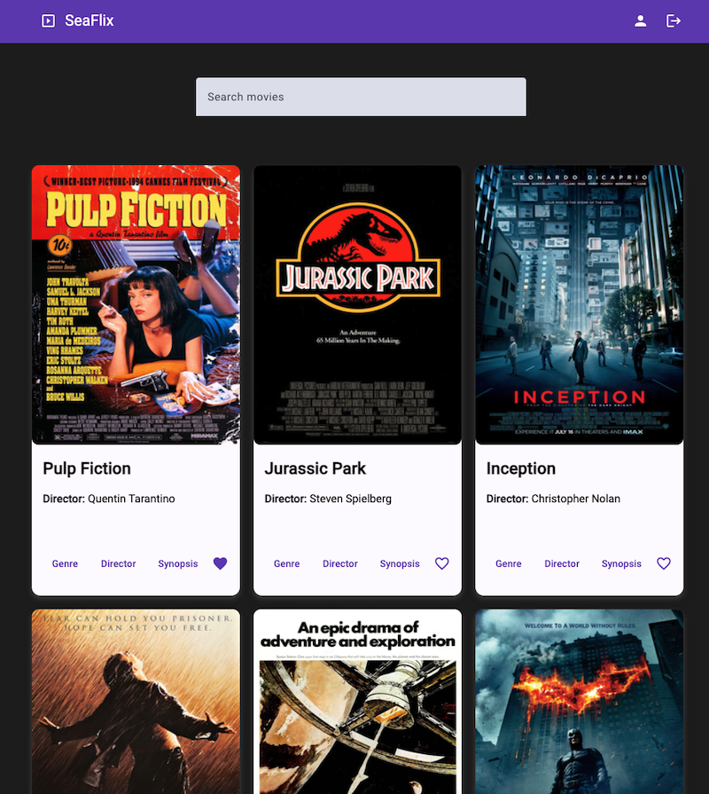

seaFlix App (Angular)
Description
- SeaFlix is a client of a web application focused on movies and its written in Angular.
- This client app was supposed to use the previously built myFlix API.
- The app leverages Angular Material for UI design and custom SCSS.
- Each movie card further displays details about its genre and director upon clicking the respective buttons.
Project Live

Key Features
- App should display a welcome view where users will be able to either log in or register an account.
- Once authenticated, the user should now view all movies.
- Filtering the list of movies with a “search” feature.
- Each movie card contains title, director's name, image, and buttons to see genre, director details, and add/remove to favourites.
- User is able to delete their account.
- User is able to update their profile information.
- On their profile view, a user is able to see their favourite movies and remove them.
Technologies Used
- Angular
- Angular CLI
- Angular Material
- TypeDoc
- TypeScript
Methodologies
- Agile development using a Kanban board
- Utilization of design language system (Angular)
- Application documentation in TypeDoc
- Writing in TypeScript, using directives and generics, static typing
- Using template-driven forms
- Leveraging one-way and bidirectional data bindings
- Implementing Angular routing
- Utilizing Angular CLI